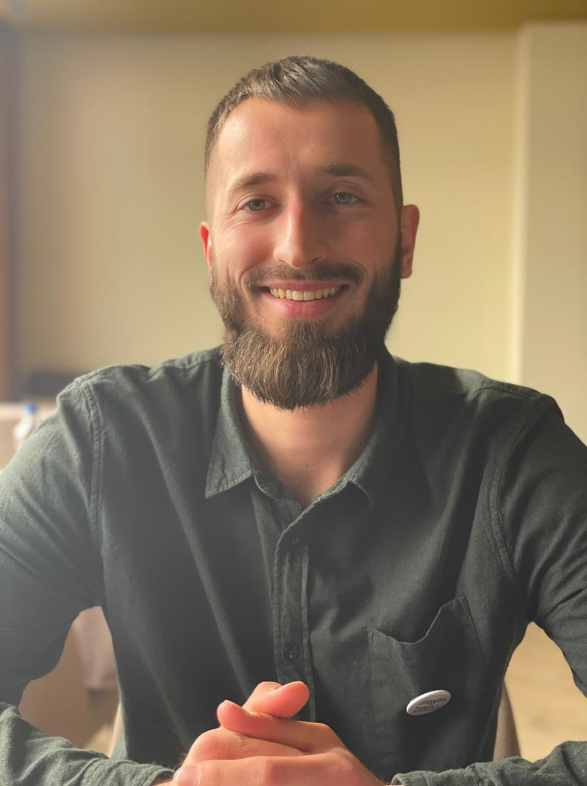
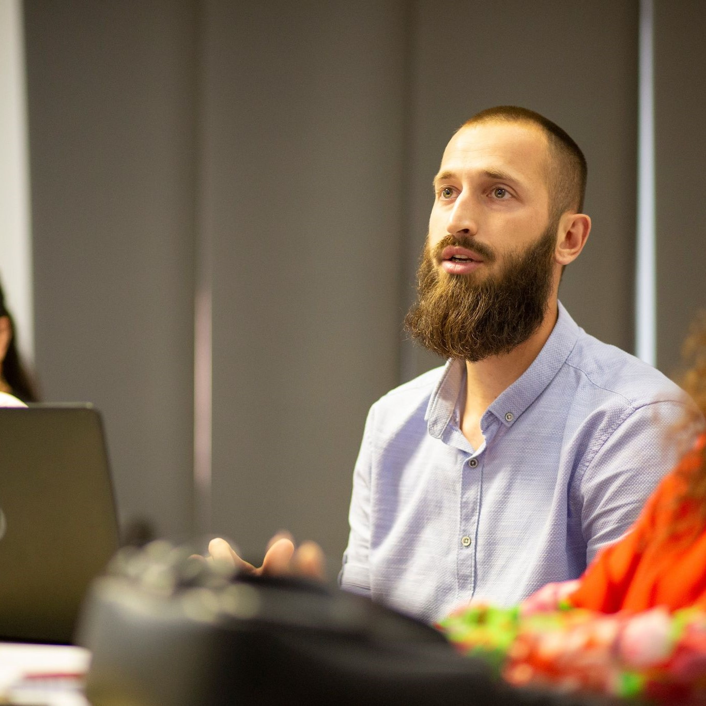

Mirësevini në faqen time
PETRIT MATOSHI

Petrit Matoshi gjatë angazhimit me Teach For Kosova, shkurt 2021
Petrit Matoshi u lind në vitin 1994 në qytetin e Kamenicës, në Kosovë. Shkollimin fillor dhe të mesëm e kreu në vendlindje,
ndërsa studimet universitare i kreu në Prishtinë, e ato pasuniversitare i vazhdoi në Prizren. Aktualisht punon në D.K.R.S. në Komunën e Kamenicës . Është i martuar dhe ka dy fëmijë.
Kategoritë
Edukimi ^
Edukimi Formal
Institucioni
Vendi
Niveli
Drejtimi
Periudha
ShFMU "Fan S. Noli
Kamenicë
Fillor, i mesëm i ulët (1-9)
/
2000-2009
Gjimnazi "Ismail Qemali
Kamenicë
I mesëm i lartë (10-12)
Shkenca Natyrore
2009-2010
Universiteti "Hasan Prishtina", Fakulteti Filozofik
Prishtinë
Bachelor
Etnologji
2012-2015
Universitit "Ukshin Hoti"
Prizren
Master
Trashëgimi Kulturore dhe Menaxhim i Turizmit
2015-2017
Edukimi Jo-Formal
Instituti/Organizata
Vendi
Trajnimi
Periudha
UsAID
Kamenicë
Cumputer Club
2009-2010
Teach For Kosova
Prishtinë
Instituti Veror
Korrik-Gusht, 2020
Për Programera
Online BootCamp 5
Qershor 2022, vazhdon
VocUp
Kamenicë
Kursi i Gjuhes Serbe
Janar-Prill 2019
Karriera ^
Arkeolog Pjesëmarrës në katër fushata arkeologjike me I.A.K.-në në Kalanë e Dardanës, nga viti 2016-2019
Mbështetës Profesional për Trashëgimi Kulturore D.K.R.S. ,Komuna e Kamenicës , nga viti 2020 e tutjeThemelues i SELMA "SELMA - lulet më të mira", është një biznes i vogël i themeluar në vitin 2021. Ofron lule të gjalla në vazo të rralla , për ambiente të brendshme

Petrit Matoshi gjatë një punëtorie në Innovation Centre Kosovo (ICK), qershor 2022
Kontakti ^
adresa: Rruga "Luan Haradinaj", nr. 29, 62000, Kamenicë, Republika e Kosovës email: petritmatoshi1@gmail.com tel.: +38349489691
social media: facebook / instagram